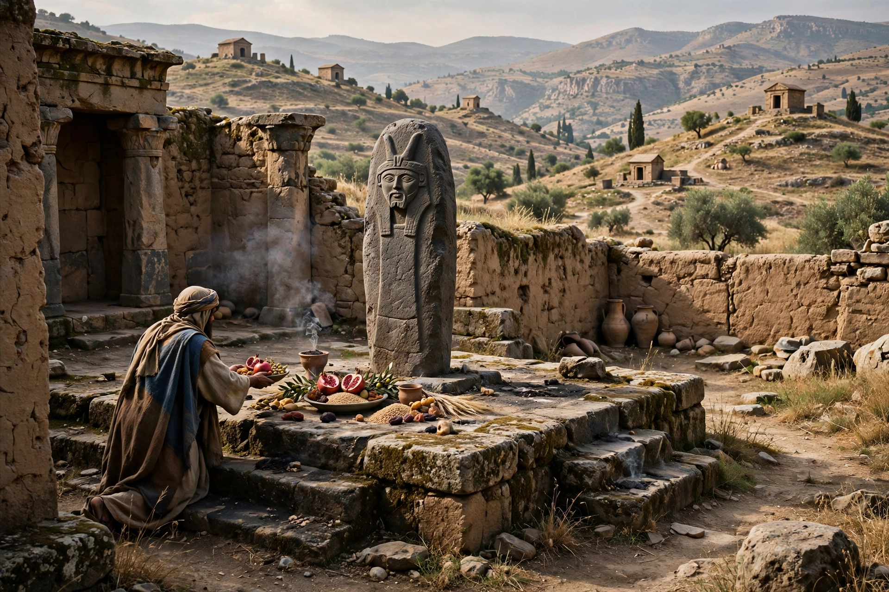

Monolatry

Monolatry (from Greek monos, "single", and latreia, "worship") is the worship of one god while acknowledging the existence of other gods. It differs from monotheism, which asserts that only one god exists, and from henotheism, in which one god is elevated as supreme though others may also be worshipped. In monolatry, the worshipper's devotion is directed exclusively to a single deity — typically the patron god of a city, tribe or nation — without denying that other peoples' gods are real.
Historical examples
The concept was developed by nineteenth-century historians of religion, notably F. Max Müller, to describe stages of ancient religion. Ancient Israelite religion is frequently described as monolatristic in its earlier phases: the commandment "You shall have no other gods before me" presupposes that other gods exist but forbids Israel to worship them, and texts such as the Song of the Sea ("Who is like you among the gods, O LORD?") imply a divine council. Full monotheism, with explicit denial of other gods' existence, appears most clearly in the prophet Deutero-Isaiah during the Babylonian exile.
Similar patterns are seen across the ancient Near East: Chemosh for Moab, Milcom for Ammon, and the tutelary deities of Mesopotamian city-states. The Moabite Stone records King Mesha's devotion to Chemosh in terms closely parallel to the Bible's language about Yahweh. Atenism under the Egyptian pharaoh Akhenaten (14th century BCE) is sometimes cited as an extreme monolatric or proto-monotheistic experiment, since Aten was elevated above all other gods, though the extent to which their existence was denied is debated.